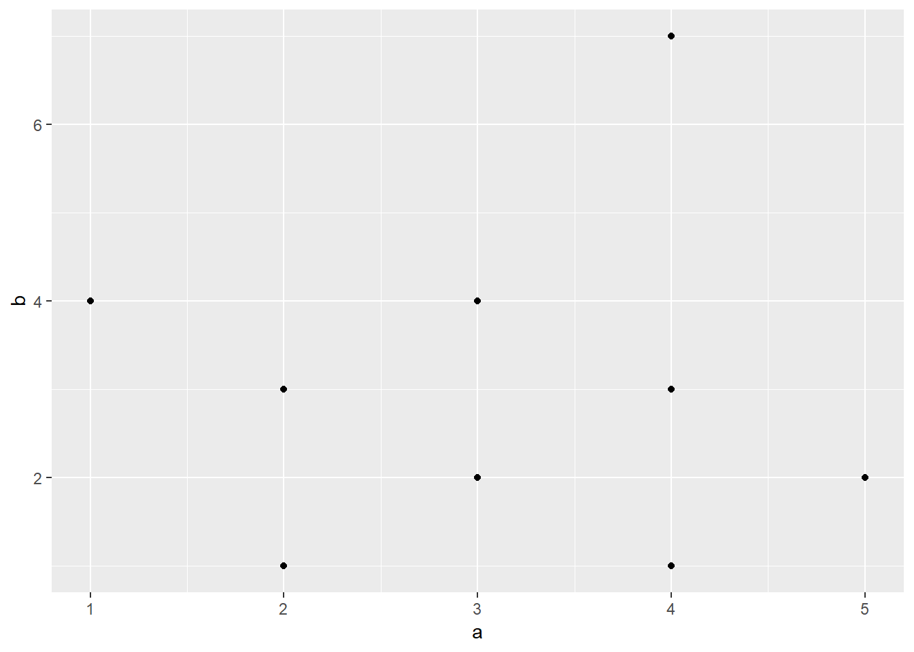
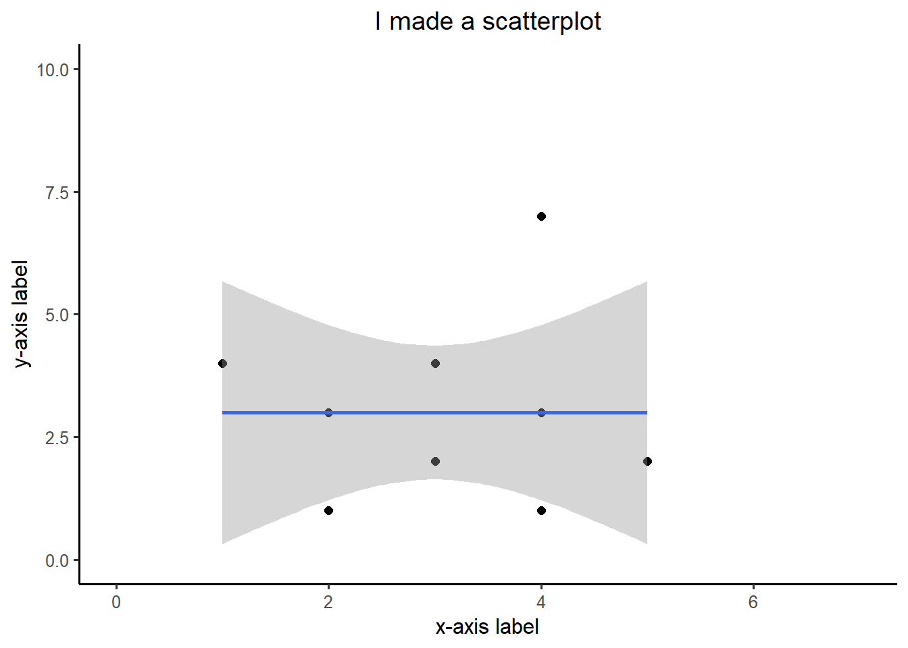
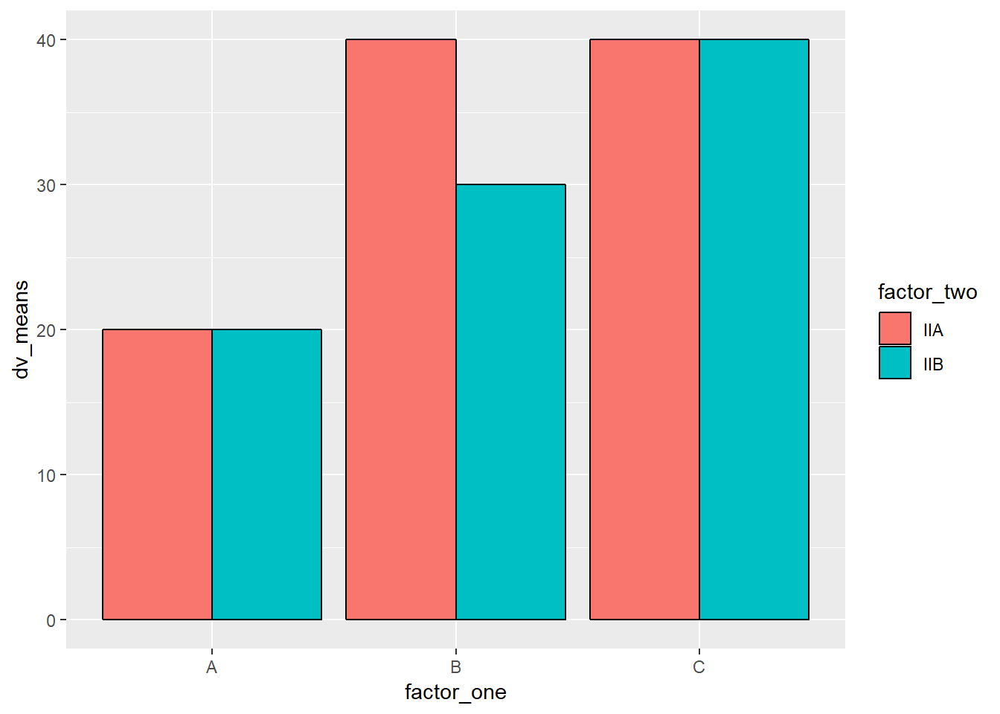
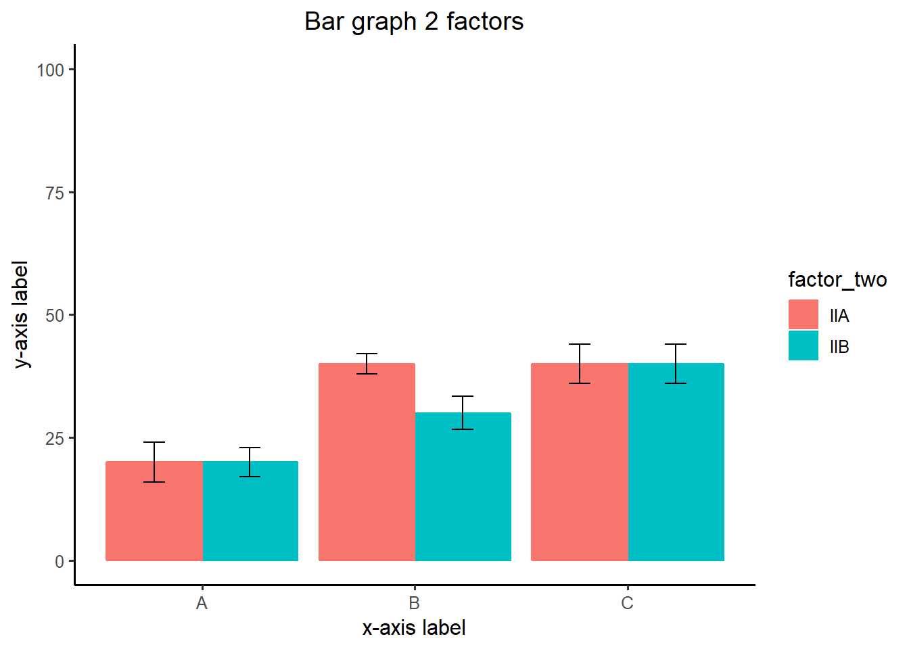
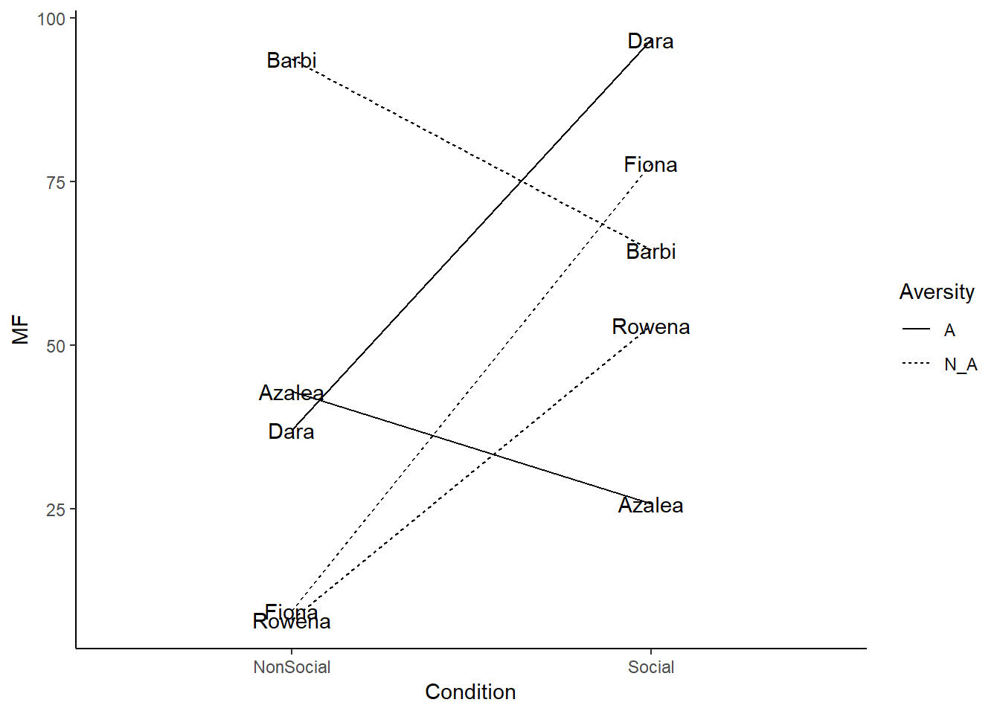

Notes
going over a lesson on 2/4/2019
a<- 1
b<-"Hello World"
d<-"3"
print(a)## [1] 1class(d)## [1] "character"vector<- c(1,2,3,4,5,6,7,8)
vector[2:4]## [1] 2 3 4vector[c(2,2,2,2,2)]## [1] 2 2 2 2 2vector[vector <6] # show the numbers less than 7## [1] 1 2 3 4 5vector[vector>=6] # greater or equal to 6## [1] 6 7 8vector[vector!=4] # show numbers that are not 5## [1] 1 2 3 5 6 7 8vector[8]<-3000 # put 3000 in the place of 8th number
vector## [1] 1 2 3 4 5 6 7 3000vector[1:2] <- 10
class(vector)## [1] "numeric"vector[7]<- "j" # put a number in the 7th place in the vector
vector## [1] "10" "10" "3" "4" "5" "6" "j" "3000"a<-c("1","2","3")
class(a)## [1] "character"b<- a
class(b)## [1] "character"as.numeric(b) # store charecters 123 as a number## [1] 1 2 3a<- "ljjasjdflsjasf;lasdjflk;asdjfl;asdjfl"
strsplit(a,split="") # if you had a paragraph and you wanted to split the paragraph or put a period in R## [[1]]
## [1] "l" "j" "j" "a" "s" "j" "d" "f" "l" "s" "j" "a" "s" "f" ";" "l" "a"
## [18] "s" "d" "j" "f" "l" "k" ";" "a" "s" "d" "j" "f" "l" ";" "a" "s" "d"
## [35] "j" "f" "l"a[1]## [1] "ljjasjdflsjasf;lasdjflk;asdjfl;asdjfl"b[(1)][5]## [1] NAexample_list <- list(a=11, b=4, d=c(1,2,3,4))
example_list## $a
## [1] 11
##
## $b
## [1] 4
##
## $d
## [1] 1 2 3 4data.frame() # particular way of structuring data## data frame with 0 columns and 0 rowsf<- matrix(0,nrow = 5, ncol = 3) # creating 5 rows and 3 columns
first_names <- c("asdf", "Asdfasd","asdfasdf")
ages<-c(3343,23122,67456)
grades<-c(89,56,99)
everybody <- data.frame(first_names,ages,grades)
everybody$ages[2] <- 12data1 <- c(1,2,3)
data1[1]## [1] 1data1[-1]## [1] 2 32/11/2019 3rd lecture
Downloading R repository
on February 25th we will talk about data analysis assignment 3 (R Basics) - R package assignment - how R code works, how it is shared I will be submiting a link to a new R repository R functions are prepackaged - in Packages - collect functions you have worked on
click instal tab in packages - repository cran allows y ou to save on cloud - choose your package and install next step load the package - click the package button
creating a simple function of adding 1 to whatever number you indicated
‘’’ my_function<- function(input){ #body of code return(output) } ‘’’
add_one <- function(x){
return(x+1)
}
add_one(9)## [1] 10‘’’ {r, eval=FALSE} add_one <- function(x){ # add one tox, and save the output save_result <- x+1
another way to do it ‘’’ {r} add_one <- function(x) return(x+1) ‘’’
add_one <- function(x) return(x+1)
add_one(7)## [1] 8how can we roll a die and get a number
‘’’ {r} sample(1:6,1) roll_dice <- function(){ return(sample(1:6,1)) } roll_dice() # make sure you put something in the parenthesis ‘’’
roll_dice <- function(x){
return(sample(1:6,1))
}
roll_dice()## [1] 3creating a sum function
x <- c(1,2,3)
my_sum <- function(x){ # this is declaring a funtion
get_sum<-sum(x)
return(get_sum)
}
# to declare a variable
a <- c(1,2,3)find a mean of restricted range of numbers
ranged_mean <- function(x, min_val, max_val){
restricted_values <- x[x>min_val & x < max_val]
return(mean(restricted_values))
}
some_numbers <-c(3,4,3,2,3,4,5,6,7,8,8,8,9,8)
ranged_mean(some_numbers,3,9)## [1] 6.444444ranged_mean <- function(x, min_val, max_val){
restricted_values <- x[x>min_val & x < max_val]
outputs <- list(original_values = x,
restricted_values=restricted_values
restricted_mean = mean(restricted_values)
}
some_numbers <-c(3,4,3,2,3,4,5,6,7,8,8,8,9,8)
ranged_mean(some_numbers,2,4)how to make new R project
steps 1. 2. 3.
2/25/19February 25th data visualization today
APA paper with papaja on March 25th
making graphs
a <- data.fram() simple reaction time - how fast can you respond to the light
first column DV - simple reaction time SRT IV - how bright the light is AGE Subject Address 150 Dim 200 bright 210
Names <- c("Peter", "Paul", "Mary",NA)
Ages <- c(100,120,90, 80)
Sex <- c("M","M","F",NA)
my_dataframe <- data.frame(Names,Ages,Sex) # start adding things in the perenthesiswhen you see a graph you will see lines corresponding to the numbers you will have to create a table with all those numbers
DV Gender XY 1 B Y 2 A Y 3 A x can have 100s of numbers
other things I should know my_dataframe\(Names # illustrates a default my_dataframe\)Ages li if u didn’t want it to be a factor you have to convert it to a diffrent thing my_dataframe\(Names <- as.character(my_dataframe\)Names)
library(ggplot2)
a <- c(1,2,3,2,3,4,5,4, 4, 2)
b <- c(4,3,4,3,2,1,2,3, 7, 1)
plot_df <- data.frame(a,b)
ggplot(plot_df, aes(x=a,y=b))+
geom_point()
# basic scatterplot
#ggplot(plot_df, aes(x=a,y=b))+
# geom_point()here we are plotting the same graph but addit custom settings
ggplot(NULL, aes(x=a,y=b))+
geom_point(size=2)+
geom_smooth(method=lm)+ # this is linear regression line
coord_cartesian(xlim=c(0,7),ylim=c(0,10))+ # if you want to increase a range
xlab("x-axis label")+ # change a name of x axis
ylab("y-axis label")+
ggtitle("I made a scatterplot")+ # add a title
theme_classic(base_size=12)+ # classic background; base size is the size of the font from 12 to whatever
theme(plot.title = element_text(hjust = 0.5))
what if u wanted to make a graph but you want it to take only a prortion of the page, like in the corner of the page base size will make sure your smaller graph has the same font
3 bars graph
factor_one <- as.factor(c("A","B","C"))
dv_means <- c(20,30,40)
dv_SEs <- c(4,3.4,4)
plot_df <- data.frame(factor_one,
dv_means,
dv_SEs)
ggplot(plot_df, aes(x=factor_one,y=dv_means))+ # what do you want to go into x and y axis
geom_bar(stat="identity")
bar graph with 2 factors
factor_one <- rep(as.factor(c("A","B","C")),2) # this 2 means repeat ABC twice
factor_two <- rep(as.factor(c("IIA","IIB")),3)
dv_means <- c(20,30,40,20,40,40)
dv_SEs <- c(4,3.4,4,3,2,4)
plot_df <- data.frame(factor_one,
factor_two,
dv_means,
dv_SEs)
# basic bar graph
ggplot(plot_df, aes(x=factor_one,y=dv_means, # aestetics definition has gotten
group=factor_two,
# color=factor_two))+ # color here means the border collor
fill=factor_two))+
geom_bar(stat="identity",
position="dodge",
color="black")
ggplot(plot_df, aes(x=factor_one,y=dv_means,
group=factor_two,
color=factor_two,
fill=factor_two))+
geom_bar(stat="identity", position="dodge")+
geom_errorbar(aes(ymin=dv_means-dv_SEs,
ymax=dv_means+dv_SEs),
position=position_dodge(width=0.9),
width=.2,
color="black")+
coord_cartesian(ylim=c(0,100))+
xlab("x-axis label")+
ylab("y-axis label")+
ggtitle("Bar graph 2 factors")+
theme_classic(base_size=12)+
theme(plot.title = element_text(hjust = 0.5))
recreating the first figure
we have 8 names (Dora, Rita, Lisa)
1st promblem in the 4th assignment - we will have names column - each name will appear twice in each condition
measurement - Mean freaquncy
Names MF Condition Dara 60 social cond Dara 60 none social
Names <-rep(c("Dara", "Azalea", "Barbi", "Rowena", "Fiona"),each=2)
MF <- rnorm(10,45,25) # 10 is the number of numbers you want, and 45 to 25 is the range
Condition <- rep(c("Social","NonSocial"),5)
Aversity <- rep(c("A","N_A" ),times=c(4,6))
plot_df <- data.frame(Names, MF, Condition, Aversity)
ggplot(plot_df, aes(x=Condition, y=MF, group=Names, linetype=Aversity))+
geom_line()+
geom_text(label=Names)+
theme_classic()